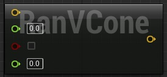
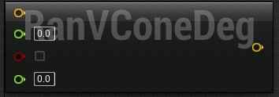
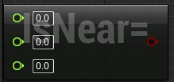
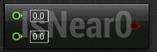
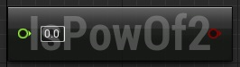

Blueprint Node: Math Node
Contents
Overview
This is a node that exposes a couple of extra math functions to blueprints, which may be of use.
I've detailed each node individually, explaining the node's inputs and its uses. I've also put the full source at the bottom, which you can just copy and paste into a .h/.cpp file and compile directly. The only change that must be done is in the .cpp where it reads "#include "HyperPro.h"" - this must be changed to the project header, which is the name of your project - i.e if your project is called "MyAwesomeGame" then the header you want to use should be "MyAwesomeGame.h"
- ( )
Random Cone vector
This node returns a random vector in the shape of a cone.
Note the bIsSquished - This is for if you have a cone thats not uniform. While HorizontalConeHalfAngleRad / HorizontalConeHalfAngleDeg has the word Horizontal in it, if bIsSquished is false then HorizontalConeHalfAngleRad /HorizontalConeHalfAngleDeg will be used for all axes.
Radians
This version takes the angles as radians:

UFUNCTION(BlueprintPure, meta = (HidePin = "WorldContextObject", DefaultToSelf = "WorldContextObject", FriendlyName = "Random VCone", CompactNodeTitle = "RanVCone", Keywords = "random vector cone radians"), Category = Math)
static FVector VRandomConeFromRad(const FVector& Dir, float HorizontalConeHalfAngleRad, bool bIsSquished, float VerticalConeHalfAngleRad);
Degrees
This version takes the angles in degrees:

UFUNCTION(BlueprintPure, meta = (HidePin = "WorldContextObject", DefaultToSelf = "WorldContextObject", FriendlyName = "Random VCone From Degrees", CompactNodeTitle = "RanVConeDeg", Keywords = "random vector cone degrees"), Category = Math)
static FVector VRandomConeFromDeg(const FVector& Dir, float HorizontalConeHalfAngleDeg, bool bIsSquished, float VerticalConeHalfAngleDeg);
Angle to Angle
This just converts from one angle type to another.
Degrees to Radians

UFUNCTION(BlueprintPure, meta = (HidePin = "WorldContextObject", DefaultToSelf = "WorldContextObject", FriendlyName = "Convert Degrees to Radians", CompactNodeTitle = "DegToRad", Keywords = "convert radians degrees"), Category = Math)
static float FDegToRad(float AngleInDegrees);
Radians to Degrees
UFUNCTION(BlueprintPure, meta = (HidePin = "WorldContextObject", DefaultToSelf = "WorldContextObject", FriendlyName = "Convert Radians to Degrees", CompactNodeTitle = "RadToDeg", Keywords = "convert radians degrees"), Category = Math)
static float FRadToDeg(float AngleInRadians);
Is Float nearly equal to
These two nodes take a float and check if it equals zero or another number within range. This is very reason for eliminating what's known as machine epsilon.
Its an error caused by rounding when doing math with floating points and an issue I had when working with UDK + UnrealScript. If you add 0.004 enough times you'll get something like 0.x999 with x being the number of times you added -1. For me, in unrealscript it was normally about 4 times, so:
0.001+ 0.001 = 0.002
0.002+ 0.001 = 0.003
0.003+ 0.001 = 0.39999999999
This is a massive pain when doing things such as math animations or movement, where you compare if x == y. The computer will be comparing 0.00399999999 == 0.004 and thus return false. These two nodes are very useful for eliminating that, because you can do "Does X equal Y +- 1?". Note that machine epsilon can't be eliminated by rounding as you would lose decimal precision - You can use very careful rounding to eliminate the issue, but its easy to get confused and mix up your numbers. Thus this is a useful shortcut both in Blueprints and C++.
IsNearlyEqual

UFUNCTION(BlueprintPure, meta = (HidePin = "WorldContextObject", DefaultToSelf = "WorldContextObject", FriendlyName = "Is float nearly equal", CompactNodeTitle = "IsNear=", Keywords = "nearly equal float"), Category = Math)
static bool IsNearlyEqual(float A, float B, float ErrorTolerance);
IsEqualZero
This is the same, but it just compares to zero, instead of a given number.

UFUNCTION(BlueprintPure, meta = (HidePin = "WorldContextObject", DefaultToSelf = "WorldContextObject", FriendlyName = "Is float nearly zero", CompactNodeTitle = "IsNear0", Keywords = "nearly zero float"), Category = Math)
static bool IsNearlyZero(float Value, float ErrorTolerance);
IsPowerOfTwo
This tells you quickly if a number is a power of two or not.

UFUNCTION(BlueprintPure, meta = (HidePin = "WorldContextObject", DefaultToSelf = "WorldContextObject", FriendlyName = "Is power of two", CompactNodeTitle = "IsPowOf2", Keywords = "is power two"), Category = Math)
static bool IsPowerOfTwo(float Value);
Full code
Header
// Copyright 1998-2014 Epic Games, Inc. All Rights Reserved.
#pragma once
#include "EdGraph/EdGraphNode.h"
#include "EdGraph/EdGraphSchema.h"
#include "BlueprintMath.generated.h"
/**
* Created by Gareth "G-Rath" Jones, 06/04/2014L
*/
UCLASS()
class UBlueprintMath : public UEdGraphNode
{
GENERATED_UCLASS_BODY()
public:
/*
* Returns a random unit vector, uniformly distributed, within the specified cone.
* HorizontalConeHalfAngleRad is the half-angle of cone, in radians. Returns a normalized vector.
*
* If bIsSquished is true then it creates a random cone with different angle limits in the Y and Z axes.
* Set by HorizontalConeHalfAngleRad and VerticalConeHalfAngleRad respectively
* Otherwise only HorizontalConeHalfAngleRad is used.
*
* Assumes world Y and Z, although this could be extended to handle arbitrary rotations.
*/
UFUNCTION(BlueprintPure, meta = (HidePin = "WorldContextObject", DefaultToSelf = "WorldContextObject", FriendlyName = "Random VCone", CompactNodeTitle = "RanVCone", Keywords = "random vector cone radians"), Category = Math)
static FVector VRandomConeFromRad(const FVector& Dir, float HorizontalConeHalfAngleRad, bool bIsSquished, float VerticalConeHalfAngleRad);
/*
* Returns a random unit vector, uniformly distributed, within the specified cone.
* HorizontalConeHalfAngleDeg is the half-angle of cone, in degrees. Returns a normalized vector.
*
* If bIsSquished is true then it creates a random cone with different angle limits in the Y and Z axes.
* Set by HorizontalConeHalfAngleDeg and VerticalConeHalfAngleDeg respectively.
* Otherwise only HorizontalConeHalfAngleDeg is used.
*
* Assumes world Y and Z, although this could be extended to handle arbitrary rotations.
*/
UFUNCTION(BlueprintPure, meta = (HidePin = "WorldContextObject", DefaultToSelf = "WorldContextObject", FriendlyName = "Random VCone From Degrees", CompactNodeTitle = "RanVConeDeg", Keywords = "random vector cone degrees"), Category = Math)
static FVector VRandomConeFromDeg(const FVector& Dir, float HorizontalConeHalfAngleDeg, bool bIsSquished, float VerticalConeHalfAngleDeg);
/** Convets a angle in degrees into radians */
UFUNCTION(BlueprintPure, meta = (HidePin = "WorldContextObject", DefaultToSelf = "WorldContextObject", FriendlyName = "Convert Degrees to Radians", CompactNodeTitle = "DegToRad", Keywords = "convert radians degrees"), Category = Math)
static float FDegToRad(float AngleInDegrees);
/** Convets a angle in radians into degrees */
UFUNCTION(BlueprintPure, meta = (HidePin = "WorldContextObject", DefaultToSelf = "WorldContextObject", FriendlyName = "Convert Radians to Degrees", CompactNodeTitle = "RadToDeg", Keywords = "convert radians degrees"), Category = Math)
static float FRadToDeg(float AngleInRadians);
/**
* Checks if two floating point numbers are nearly equal.
* @param A First number to compare
* @param B Second number to compare
* @param ErrorTolerance Maximum allowed difference for considering them as 'nearly equal'
* @return true if A and B are nearly equal
*/
UFUNCTION(BlueprintPure, meta = (HidePin = "WorldContextObject", DefaultToSelf = "WorldContextObject", FriendlyName = "Is float nearly equal", CompactNodeTitle = "IsNear=", Keywords = "nearly equal float"), Category = Math)
static bool IsNearlyEqual(float A, float B, float ErrorTolerance);
/**
* Checks if a floating point number is nearly zero.
* @param Value Number to compare
* @param ErrorTolerance Maximum allowed difference for considering Value as 'nearly zero'
* @return true if Value is nearly zero
*/
UFUNCTION(BlueprintPure, meta = (HidePin = "WorldContextObject", DefaultToSelf = "WorldContextObject", FriendlyName = "Is float nearly zero", CompactNodeTitle = "IsNear0", Keywords = "nearly zero float"), Category = Math)
static bool IsNearlyZero(float Value, float ErrorTolerance);
/**
* Checks whether a number is a power of two.
* @param Value Number to check
* @return true if Value is a power of two
*/
UFUNCTION(BlueprintPure, meta = (HidePin = "WorldContextObject", DefaultToSelf = "WorldContextObject", FriendlyName = "Is power of two", CompactNodeTitle = "IsPowOf2", Keywords = "is power two"), Category = Math)
static bool IsPowerOfTwo(float Value);
};
C++
// Copyright 1998-2014 Epic Games, Inc. All Rights Reserved.
#include "HyperPro.h" //Change this to your project's header file (Its the file thats got the same name as your project and ends with .h)
#include "UnrealMathVectorCommon.h"
#include "BlueprintMath.h"
#define SMALL_NUMBER (1.e-8f)
UBlueprintMath::UBlueprintMath(const class FPostConstructInitializeProperties& PCIP)
: Super(PCIP)
{
}
FVector UBlueprintMath::VRandomConeFromRad(const FVector& Dir, float HorizontalConeHalfAngleRad, bool bIsSquished, float VerticalConeHalfAngleRad)
{
if (bIsSquished)
return FMath::VRandCone(Dir, HorizontalConeHalfAngleRad, VerticalConeHalfAngleRad);
else
return FMath::VRandCone(Dir, HorizontalConeHalfAngleRad);
}
FVector UBlueprintMath::VRandomConeFromDeg(const FVector& Dir, float HorizontalConeHalfAngleDeg, bool bIsSquished, float VerticalConeHalfAngleDeg)
{
if (bIsSquished)
return FMath::VRandCone(Dir, FMath::DegreesToRadians(HorizontalConeHalfAngleDeg), FMath::DegreesToRadians(VerticalConeHalfAngleDeg));
else
return FMath::VRandCone(Dir, FMath::DegreesToRadians(HorizontalConeHalfAngleDeg));
}
float UBlueprintMath::FDegToRad(float AngleInDegrees)
{
return FMath::DegreesToRadians(AngleInDegrees);
}
float UBlueprintMath::FRadToDeg(float AngleInRadians)
{
return FMath::RadiansToDegrees(AngleInRadians);
}
bool UBlueprintMath::IsNearlyEqual(float A, float B, float ErrorTolerance = SMALL_NUMBER)
{
return FMath::IsNearlyEqual(A, B, ErrorTolerance);
}
bool UBlueprintMath::IsNearlyZero(float Value, float ErrorTolerence = SMALL_NUMBER)
{
return FMath::IsNearlyZero(Value, ErrorTolerence);
}
bool UBlueprintMath::IsPowerOfTwo(float Value)
{
return FMath::IsPowerOfTwo(Value);
}